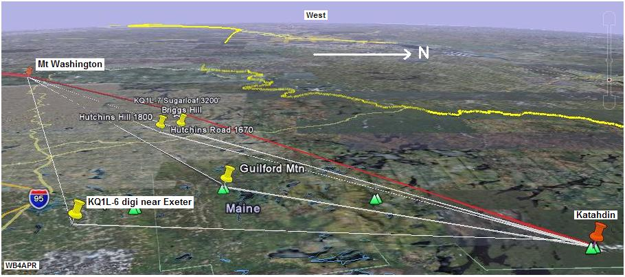

(Sugarloaf, ME?)
2011 Planning: AA1WI Brian volunteered to go to Sugarloaf in Maine to act as a relay between Katahdin and Mt Washington. But with the loss of the team at Mt Washington, he will go there instead. In his place at Sugarloaf, John Tarbox, WA1KLI who does not have an APRS radio will go to Sugarloaf and serve as a VOICE relay on 445.925 if all else fails! Here is the RF path from Mt Washington to Katahdin direct. See RF link to Mt Washington.
2010 team has not been identified. Back in 2009, the team leader, Dave Hawke, KQ1L, was unable to participate and so there was no relay in Maine.
See the Golden Packet plan. . This is one of the 15 hill-top sites from Georgia to Maine we hope to visit this summer on 26 July for 6 hours to attempt to relay a text message using hand-held radios the 2000 mile length of the Appalachain trail. This is to be a no impact Leave-No-Trace type of event of a few individuals at each site. . Other hikers equipped with APRS ham radios are welcome to participate with advance notice.
Maine Relay: A number of potential relay points were looked at in Maine to link between Mount Wachington in New Hempshire and the end of the Appalachian Trail on Katahdin in Baxter State Park, Maine as shown below. Although Sugarloaf mountain is ideally situated it is a tightly controlled site, hard to access, and full of high RF intermod levels. It would be impractical to work in that area for this event. An alternative has been found down near Exeter that is far from the mountains, but should have a clean shot in both directions.
But we have now also assumed that the Katahdin station will not be a hike-up to 5267 feet, but should be planned around a drive-up to the highest road at the Abol campground at only 1300 feet. This eliminates nearly 4000 feet of antnna height gain. Therefore the KQ1L-6 location is closer to Katahdin and further from Mt. Washington. But it may still be a challenge.
ALTITUDE: . . . . . . . . . . . . TBD feet
POSITION: . . . . . . . . . . . . 44-56.6 N / 69-07.1 W
LINK NORTHEAST: . . . . Katahdin. A hike-in site.
See RF details
by KX4O
LINK SOUTHWEST: . . . . Mount Washington Easy drive-up.
See RF details
by KX4O
REPEATERS:. . . . . . . . . . TBD
DIGIEATER: . . . . . . . . . . KQ1L-6
TEAM LEADER:. . . . . . . No Team found yet for 2010
. . . . . . . . . . . . . . . . . . . . . . Dave Hawke, KQ1L (2009)
. . . . . . . . . . . . . . . . . . . . . . Mark Ford KB1MSA, Bethel, Maine (2009)

COMMENTS: On Friday 24 July, I finally got through to Dave and he says that he will not be able to do anything for the event, though he will try to contct someone near the KQ1L-6 digi and switch it over to 144.34 for the event. But it did not sound like they were reading our emails, so I doubt that the configuration will support HOPn-N or TEMPn-N. Just the usual WIDEn-N and probably even its same call KQ1L-6.
Earlier, Dave Hawke and commented:
Problem solved... I have been doing radio in Maine here since I was in my teens and know the lay of the land very well haven grown up here. I have chosen certain locations for all my digi and voice repeater for a reason. In Maine because of the Mountain ridges signal don't travel very well Southeast to Northwest. Most signal shoot between the valleys Northeast to Southwest.
Having said all that, look at KQ1L-6 on APRS. This site is in Exeter Maine and has a bird eye view of Katahdin and Mt. Washington. Clarence AA1PN works the Mt. Washington repeater regularly with a HT on a RubberDuckey. He has a 200 foot commercial tower with a 2-meter antenna on top of it and works into Houlton and Caribou all the time.

DETAIL LINK ANALYSIS BY KX4O: Be sure to follow the two RF links at the
top of this page to see the excellent and very detailed RF link analysis
performed for every link in this project by KX4O John Huggins.
Each RF link shows the terrain map
elevations, the AT trail in yellow, the RF path loss itself
including fresnel zones and finally a
statistical plot of the probabilities of link availability. We will very
much be looking at the results of this project compared to the pre-event
analysis and predictions. Here are the links:
LINK NORTHEAST: . . .
KQ1L-6 to Mt Katahdin RF Link Analysis
LINK SOUTHWEST: . . .
Mt Washington to KQ1L-6 Link Analysis
All of KX4O's links are shown on his AT Links Page.
To keep the hops to a minimum and provide strong 144.34 coverage, if you want, we will hook a D710 from my mobile to Clarence's top mounter antenna. This will link Katahdin to Mt. Washington with just one hop. Since he is working mobile from the Kadahdin on a regular basis it should not take much of a setup at Katahdin. The RF path analysis looks possible:
Dave KQ1L
Prior to the above report, we were also looking at some other sites found on google?
Briggs Hill: seems to have a road to the top and does not appear to have any otehr commercial stations at the top. But who knows.
Hutchins Hill: may be another possibility.
Guilford Mountain: appears to be possibly better because it is closer to Katahdin, but it also appears to have multiple sites along the montain ridge which could be commercial tower sites. Only local knowledge can confirm this.
The rest of this page is still the original plan for SUgarloaf which has now been abandoned. I will clean up this page as new information comes in.
APRS maps indicate that there is an APRS digipeater already at this location,
KQ1L-7,
but we have been unable to make contact with the operator of this digi,
though we are continuing to try...

 COMMENTS: .
COMMENTS: .
We have gotten word to KQ1L who appears to have lots of APRS and montain top access. But he does not do email, so we have not yet found a way to coordinate this project.
Bob, WB4APR
See my other GENERAL page on APRS applications and Ideas on the AT
Return to the APRS HOMEPAGE or SiteMap.
{kind=link}